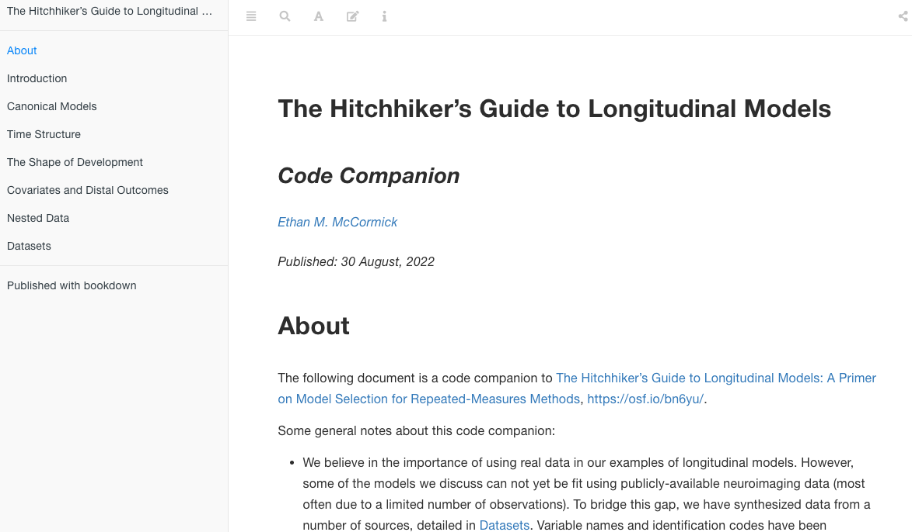

The Hitchhiker’s Guide to Longitudinal Models: A Primer on Model Selection for Repeated-Measures Methods
Ethan M. McCormick | Department of Methodology & Statistics | Leiden University
Michelle L. Byrne | Turner Institute for Brain and Mental Health | Monash University
John C. Flournoy | Department of Psychology | Harvard University
Kathryn L. Mills | Department of Psychology | University of Oregon
Jennifer H. Pfeifer | Department of Psychology | University of Oregon
Ethan M. McCormick, Michelle L. Byrne, John C. Flournoy, Kathryn L. Mills, & Jennifer H. Pfeifer. 2022. “The Hitchhiker’s Guide to Longitudinal Models: A Primer on Model Selection for Repeated-Measures Methods,” preprint. PsyArXiv.
Abstract
Longitudinal data are becoming increasingly available in developmental neuroimaging. To maximize the promise of this wealth of information on how biology, behavior, and cognition change over time, there is a need to incorporate broad and rigorous training in longitudinal methods into the repertoire of developmental neuroscientists. Fortunately, these models have an incredibly rich tradition in the broader developmental sciences that we can draw from. Here, we provide a primer on longitudinal models, written in a beginner-friendly (and slightly irreverent) manner, with a particular focus on selecting among different modeling frameworks (e.g., multilevel versus latent curve models) to build the theoretical model of development a researcher wishes to test. Our aims are three-fold: 1) lay out a heuristic framework for longitudinal model selection, 2) build a repository of references that ground each model in its tradition of methodological development and practical implementation with a focus on connecting researchers to resources outside traditional neuroimaging journals, and 3) provide practical resources in the form of a codebook companion demonstrating how to fit these models. These resources together aim to enhance training for the next generation of developmental neuroscientists by providing a solid foundation for future forays into advanced modeling applications.
Codebook Companion
Code examples and additional information/explanations can be found here.

Licenses
Text and figures: All text and images are licensed under Creative Commons (CC-BY-4.0)
Code: All code is licensed under the MIT License.